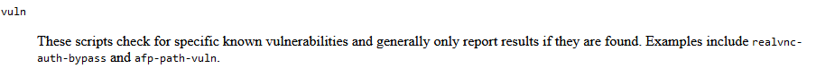
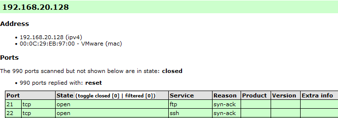
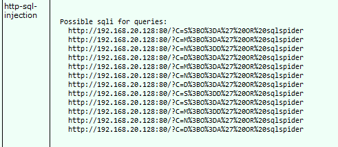

https://nmap.org/book/nse-usage.html
Este apartado nos cuenta las diferentes categorías de scripts que se encuentran en ese engine.
Tiene scripts que están orientados a temas de autenticación, a temas de broadcasting, a temas de Brute Force.
La que a nosotros nos puede interesar ahora mismo es ésta de aquí Vuln.

sudo nmap -v -sS --script=vuln 192.168.20.128
Para sacarlo más ordenado:
sudo nmap -v -sS -oX vulnerabilidades_tcp.xml --stylesheet="https://svn.nmap.org/nmap/docs/nmap.xls" --script=vuln 192.168.20.128

Podemos ver que en la máquina ubuntu el puerto 21 dice que no detecta vulnerabilidades cuando nosotros de forma manual si que hemos encontrado e incluso un exploit.
No es 100% infalible, pero sí que puede ser una herramienta muy rápida para obtener de manera ágil vulnerabilidades que podamos explotar en un momento determinado de manera bastante sencilla.

Adjunto los archivos generados:
| Linked file: vulnerabilidades_tcp.xml |
| Linked file: vulnerabilidades_udp.xml |